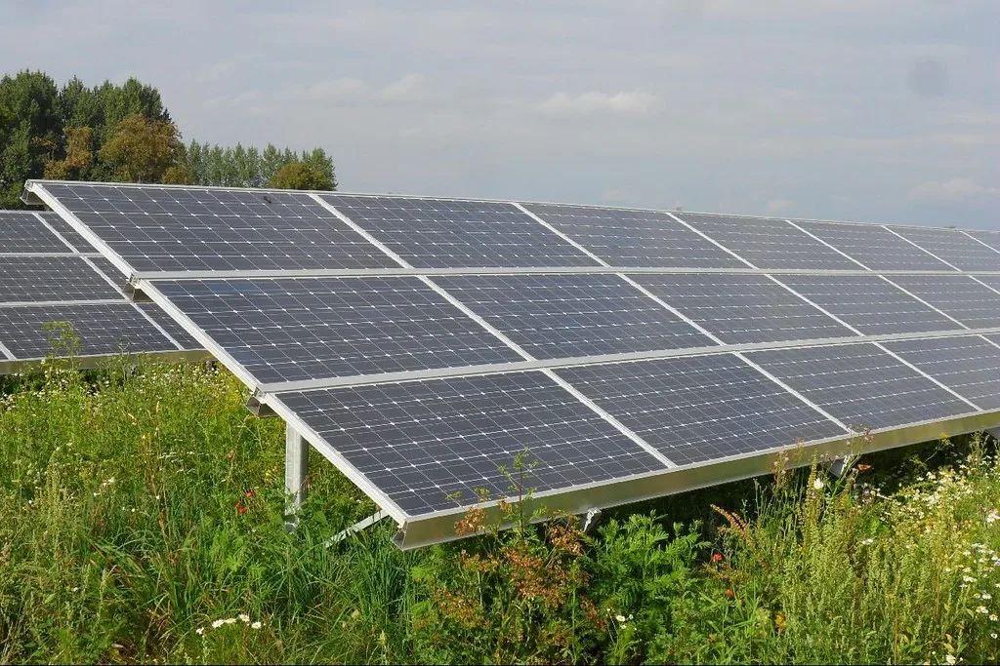
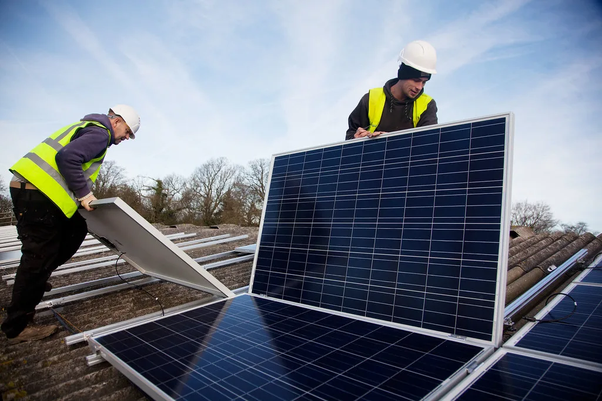

정부가 11일 국무회의를 열어 2035년까지 달성할 국가 온실가스 감축목표(NDC)를 확정했다. 새로 정해진 목표치는 2018년 배출량 대비 53%에서 61% 사이를 감축 범위로 설정한 것으로, 그동안 산업계와 환경단체 사이에서 이어져 온 논쟁을 일정 부분 반영한 수치로 평가된다. 이번 결정은 국제사회에 제출할 중장기 감축 계획의 뼈대가 되는 만큼, 정부 내에서도 목표 설정을 둘러싸고 여러 차례 조율을 거친 것으로 알려졌다.
이재명 대통령은 이날 회의에서 탄소중립사회로의 전환이 일부 고통을 수반하더라도 반드시 가야 할 길이라는 점을 분명히 했다. 그는 지속가능한 성장과 세계 경제 강국으로의 도약을 위해 탄소중립 전환을 피할 수 없다고 강조하면서도, 국민과 기업이 짊어질 부담을 충분히 살펴야 한다고 당부했다. 목표와 수단 사이에서 균형점을 찾는 실용적인 접근이 필요하다는 게 이날 발언의 핵심 메시지였다.

이번 목표치는 2018년을 기준 연도로 삼아 그로부터 53%에서 61% 사이의 감축률을 제시한 것이어서, 실제 이행 과정에서는 하한선과 상한선 중 어느 쪽에 근접하느냐에 따라 산업계가 느낄 부담의 크기가 크게 달라질 수 있다. 정부는 구체적인 감축 경로와 부문별 할당은 추후 세부 이행계획을 통해 단계적으로 확정해 나갈 방침인 것으로 전해졌다. 범위형 목표를 택한 배경에는 에너지 전환 속도, 산업 구조조정 여건 등 여러 변수를 감안해 유연성을 확보하려는 의도가 있는 것으로 보인다.
정부가 이처럼 탄소가격 정책에 무게를 두는 기조는 올해 들어 꾸준히 이어져 왔다. 앞서 열린 국무회의에서도 탄소배출권 거래제 적용 범위를 확대하고, 스위스식 탄소세 도입 여부를 검토하라는 지시가 나온 바 있다. 당시에도 지금 수준의 배출권 제도만으로는 감축 효과가 충분하지 않다는 인식 아래 적용 범위를 더 넓혀야 한다는 취지의 언급이 있었던 것으로 전해졌다. 이번 NDC 확정은 그간의 정책 방향을 구체적인 수치 목표로 공식화한 결과로 해석된다.

산업계는 감축 목표가 상한선에 가깝게 설정될 경우 철강, 석유화학, 시멘트 등 에너지 집약 산업의 생산 비용 부담이 커질 수 있다고 우려해 왔다. 반면 환경단체는 기존에 논의되던 수치가 국제사회의 기후 목표에 비춰 여전히 미흡하다는 입장을 보여 왔던 만큼, 이번 53~61%라는 범위형 결정에 대해서도 평가가 엇갈릴 가능성이 있다. 정부로서는 두 입장 사이에서 사회적 수용성을 확보하는 것이 향후 세부 이행 과정에서 가장 큰 과제로 남을 것으로 보인다.
정부는 이번에 확정된 목표를 토대로 국제사회에 제출할 공식 문서를 준비하는 동시에, 에너지·산업·수송 등 부문별 세부 이행 방안을 순차적으로 마련할 계획이다. 전문가들은 목표 설정 자체보다 이를 실제로 달성해 나가는 이행 과정에서의 재원 마련과 산업 지원책이 더 중요한 과제가 될 것이라고 지적한다. 국민과 기업의 부담을 살피겠다는 이날 대통령의 발언이 구체적으로 어떤 지원 정책으로 이어질지가 앞으로 주목할 대목이다.